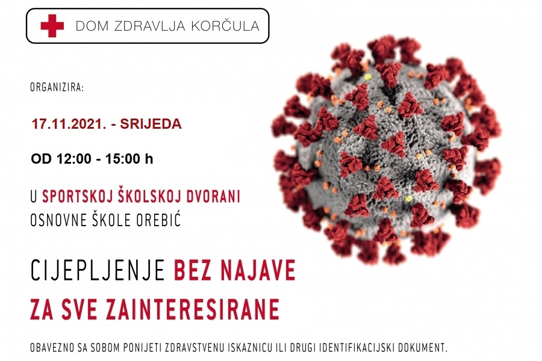

Covid-19 information
Vaccination without notice

Korčula Health Center is organizing a vaccination against Covid 19 on Wednesday, November 17, from 12:00 to 15:00. Anyone interested can get vaccinated in the school sports hall of the Orebić Elementary School from 12 to 3 p.m. It is possible to get vaccinated with vaccines from Pfizer, Moderna and Johnson & Jonhnson. Be sure to bring your health card or other identification document. People who are vaccinated with the 2nd or 3rd dose must bring an acknowledgment of receipt of the last dose of the vaccine
Source: 24sata.hr